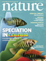
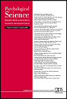

News
Graduate Student Applications
The lab is currently accepting graduate students. Please apply through the Department of Psychological and Brain Sciences. The Hopkins vision community is an exciting one and includes the labs of Professors Halberda, Yantis, Egeth, and Feigenson.
Numerical Approximation Correlates With Math Ability
 A podcast by Nature featuring this research
Spinney, L (2009). Why some people can't put two and two together. New Scientist, 21 January 2009.Bower, B (2008). Inborn Path to Math. Science News, 27 September 2008.
Angier, N (2008). Gut Instinct's Surprising Role in Math. New York Times, 15 September 2008.
'Number sense' boosts math skills: study. ABC News, 8 September 2008.
Stein, R (2008). How One's 'Number Sense' Helps With Mathematics. Washington Post, 8 September 2008. Also, view photos from this article.
Innate 'number sense' boosts math skills. The Australian, 8 September 2008.
Geddes, L (2008). Good with numbers? It's in your genes. New Scientist, 7 September 2008.
Highfield, R (2008). Toddler maths skills indicates future ability. UK Telegraph, 7 September 2008.
Infants Chunk Items To Expand Memory
Babies use grown-up memory tricks. New Scientist, 19 July 2008.
Even Toddlers Get It: Data 'Chunks' Are Easier To Remember. Science Daily, 20 July 2008.
Infants And Adults Share Similar Memory Systems. TS-Si News Service, 15 July 2008.
Moskowitz, C (2008). Babies think like adults. Live Science, 14 July 2008.

Our Work On Sets And Colors Got Some Popular Spin.
Tracking your team. A TV spot that aired December 2006.
MacGregor HE, (2006). Team colors help us follow the action. LAtimes.com, 10 July 2006.
Mundell EJ, (2006). Brain may be hard-wired to track team sports. HealthDay.com, 6 July 2006.
Emery C, (2006). Team colors are a big part of following the action. Baltimore Sun, 30 June 2006.
Why are uniforms uniform? Softpedia.com, 22 June 2006.
Our Affiliated Labs |
||
 Dr. Justin Halberda Dr. Lisa Feigenson |
|
|